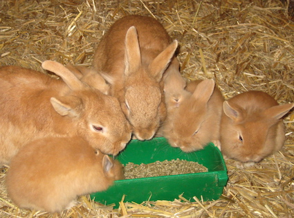

Ungdomskonferanse, Musikk- Korps- og orkesterleir
Aarholt-tunet Gjestegård og Leirskole er bygget opp for at barn og ungdom skal få oppleve utvikling, samarbeidstrening, mestring, spenning og opplevelser.
De mange aktivitetene, dyrene, de gamle tømmerbygningene, de store naturområdene rundt stedet som ikke har innsyn fra naboer (og er langt fra tettsted og butikk), og de mange fellesrommene, - gir en flott ramme rundt en ungdomskonferanse eller korps- og orkesterleir.
Barne- og ungdomsarrangement har vi hovedsakelig fra påske og til ut oktober. Men det er også mulig å komme i vinterhalvåret, selv om det da blir litt begrenset hvilke ute-aktiviter en kan bestille fra Aarholt-tunet. (Det kan være bedre plass for korpsleirer i helger fra høstferien fram til påske enn på sommerhalvåret.)
Vi har også politiske ungdomsorganisasjoner, grupper fra kirker og menigheter, konfirmantleirer og helse-grupper. I tillegg til de over 20 ukene med leirskole i løpet av et år. Alt i en rusfri ramme.
Aarholt-tunet ligger midt i Vestfold, bare 7 km fra E-18, 10 km fra jernbane og 17 km fra flyplassen Sandefjord-Torp.
Stedet har plass til opptil 80 barne- og ungdomsdeltakere ++ fordelt på de 23 soverommene vi har.
De fleste rom er familierom, noen leiligheter med flere soverom. Og alle leilighetene har bad.
Fellesrommene
Aarholt-tunet Gjestegård har mange fellesrom, mange øvings- og grupperom, og rommene er meget innbydende. De gamle bygningene fra 1800-tallet er restaurert i gjenbruks-stil, og gir en spennende ramme rundt arrangementene.
- Amfiet i låven: Plass til 100 på benker, eller 15-70 på stoler - alt etter hva en vil benytte det til.
- Aktivitetsrommet: Vi har et stort møterom på 80 m2 på flatt gulv for fellesøvelser. Der er det også egnet til å ha konferansebord foran seg. Antall med "buss", ca 40-60 personer. Med instrumenter ca. 15-40 stk (se over).
- Bryggerhuset: En koselig stue med bakerovn, egnet for gruppesamlinger for 5 - 20 stk.
- Fjøsstue i låven er meget spesiell og koselig. Kan også benyttes til gruppeøvelser. Ca 20 pers. eller 60 til stuekos.
- Et mindre konferanserom innenfor matsalen er også fleksibelt. Enten til gruppesamlinger for 20 stk. eller gruppeøvelse med instrumenter ca. 15 stk.
- Et kapell innenfor fjøsstua er også fleksibelt. Her kan akustikken lett reguleres ut fra ønsker en måtte ha. Gruppeøvelse med instrumenter ca. 10-15 stk.
- I tillegg er det små oppholdsrom/grupperom i flere av småhusene.
Maten er velsmakende.
Vi får ofte skryt for at maten også på barne- og ungdomsarrangementene er svært god, variert og godt tilpasset aldersgruppen.
I tillegg er prisene for kost, losji og program lavere enn mange andre steder.
Aktiviteter
Stedet har svært mye å by på i fritiden. Vi kan legge tilrette for aktiviteter og opplevelser, og har laget endel løyper som også er for selvaktivisering. Dyrekos, klatre- og mestringsaktiviteter, natursti, teambuilding og samhandling, flåtepadling og masse mer. Noe er inkludert i prisen. Annet betaler en ekstra for. (Se mer informasjon på "Konfirmantleir-siden", "Leirskole", "Aktiviteter" og "Priser".)
Dyra må også nevnes. Som du vil se andre steder på sidene, har vi mange dyr for kos og stell. Og vi får ofte tilbakemeldinger på at mange av barna setter MEGET stor pris på at de har fått ansvar for en kanin i løpet av oppholdet. (Aarholt-tunet har mange.....kaniner.)
Vi vil også nevne "teambuildingsløypa", en sammenspleisende aktivitetsløype som får fram kreativitet, samarbeid, moro og utfordringer. Denne kan enten være som et par timers sammenhengende opplegg, eller en kan ha elementer av det om en ikke har så mye tid til rådighet.
Kontakt oss for forespørsler og for avtaleark ved bestillinger.
Aarholt-tunet Gjestegård og Leirskole
Årholtveien 80, 3160 Stokke
Tlf. 33 33 90 96
epost: oss@aarholt-tunet.no